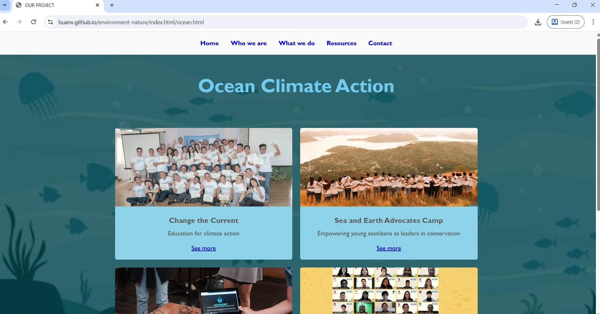
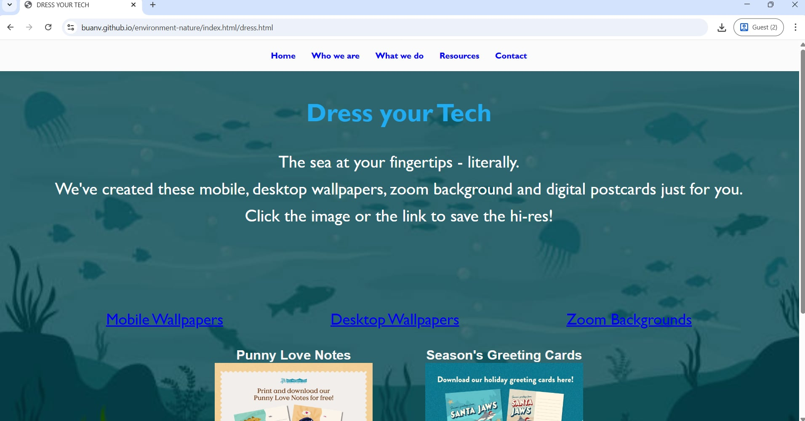

Webpage using HTML and CSS




I am currently pursuing a degree in Information Technology,
where I am developing my foundation in web development using
HTML and CSS. Through my studies, I am learning how to build
structured, responsive, and visually appealing web pages while
understanding the importance of user experience and design.
Recently, I worked on a school project where we developed a
website as part of our coursework. This project allowed me to
apply what I’ve learned in a real scenario—from planning the
layout and designing the interface to writing clean and
organized code. It also helped me improve my problem-solving
skills and collaboration with others.
As I continue my journey in IT, I am eager to expand my
knowledge in web development and explore more technologies
to create better and more functional websites.